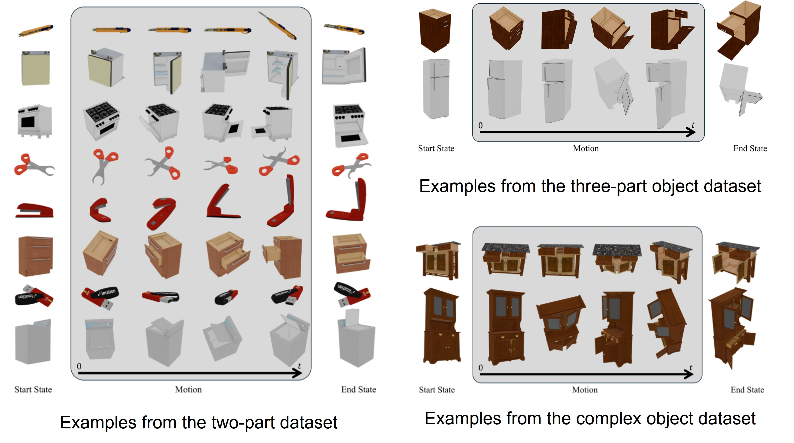
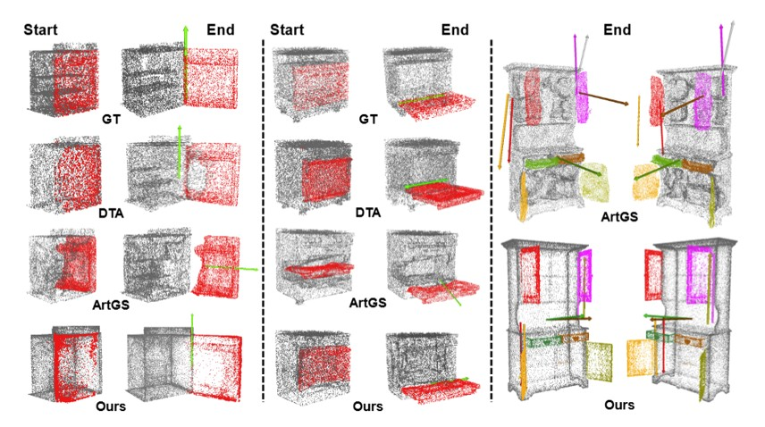
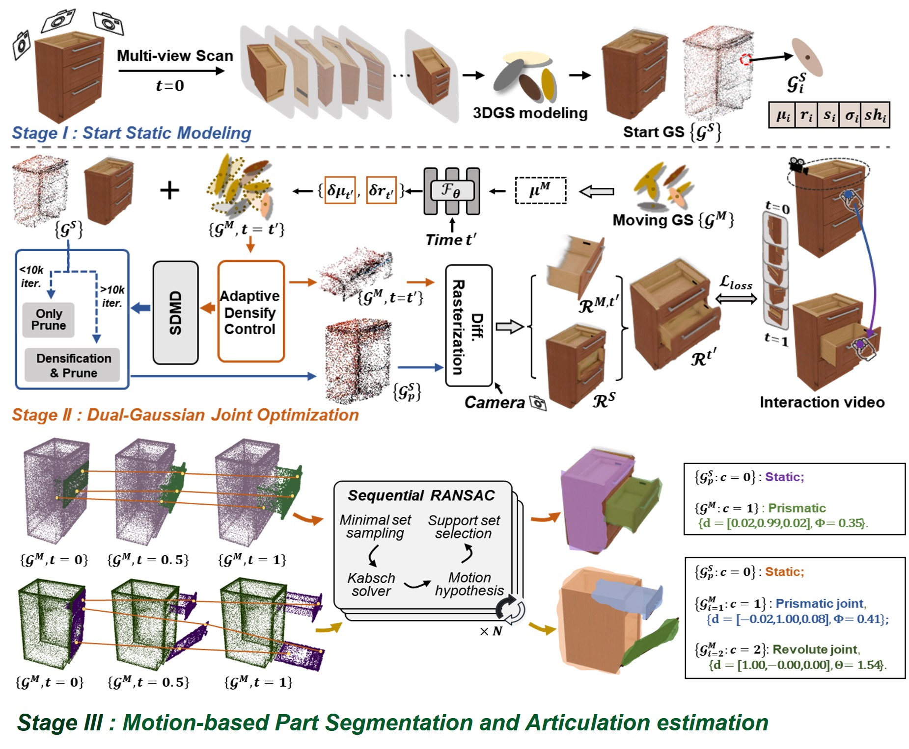

Articulation in Motion: Prior-free Part Mobility Analysis for Articulated Objects By Dynamic-Static Disentanglemen
ICLR 2026 (poster)
Abstract
Articulated objects are ubiquitous in daily life. Our goal is to achieve a high-quality reconstruction, segmentation of independent moving parts, and analysis of articulation. Recent methods analyze two different articulation states and perform per-point part segmentation, optimizing per-part articulation using cross-state correspondences, given a priori knowledge of the number of parts. Such assumptions greatly limit their applications and performance. Their robustness is reduced when objects cannot be clearly visible in both states. To address these issues, in this paper, we present a novel framework, Articulation in Motion (AiM).. We infer part-level decomposition, articulation kinematics, and reconstruct an interactive 3D digital replica from a user–object interaction video and a start-state scan. We propose a dual-Gaussian scene representation that is learned from an initial 3DGS scan of the object and a video that shows the movement of separate parts. It uses motion cues to segment the object into parts and assign articulation joints. Subsequently, a robust, sequential RANSAC employed to achieve part mobility analysis without any part-level structural priors, which clusters moving primitives into rigid parts and estimates kinematics while automatically determining the number of parts. The proposed approach separates the object into parts, each represented as a 3D Gaussian set, enabling high-quality rendering. Our approach yields higher quality part segmentation than all previous methods, without prior knowledge. Extensive experimental analysis on both simple and complex objects validate the effectiveness and strong generalization ability of our approach.
Our dataset
Visual Resutls
Overview
We propose a novel pipeline, AiM , to achieve articulated object reconstruction and part mobility analysis from the motion cues in a user–object interaction video and without any part-level structural priors, consisting of two key components: I) A novel dual-Gaussian representation analyzes the motion cues and achieves dynamic-static disentanglement; II) An optimization-free and prior-free sequential RANSAC clusters the dynamic Gaussians into rigid parts and estimates per-part articulation parameters.
Results on Real Data
BibTeX
@inproceedings{ai2026Articulation,
title={Articulation in Motion: Prior-free Part Mobility Analysis for Articulated Objects By Dynamic-Static Disentanglement},
author={Hao Ai, Wenjie Chang, Jianbo Jiao, Ales Leonardis, Eyal Ofek},
booktitle = {The Fourteenth International Conference on Learning Representations (ICLR)},
year={2026}
}